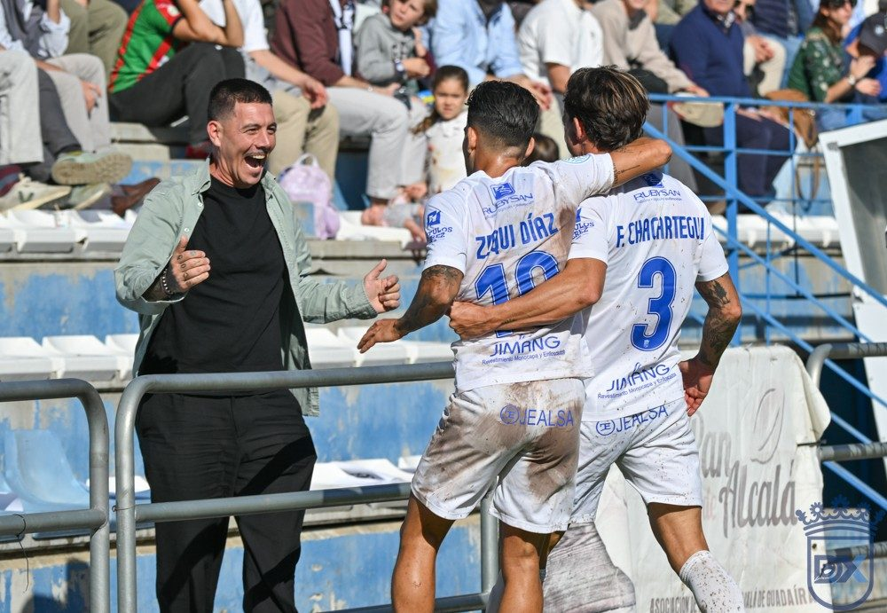

Jornada 12 · At. Central 0-2 Xerez CD
El abrazo de Chacartegui con Gallo
Chacartegui y Zeki se abrazan con Gallo, de la secretaría técnica del club, en la celebración de un gol en el Ciudad de Alcalá.
Foto: Diario Xerecista · 22 de noviembre de 2026Leer la crónica →Compartir en 𝕏